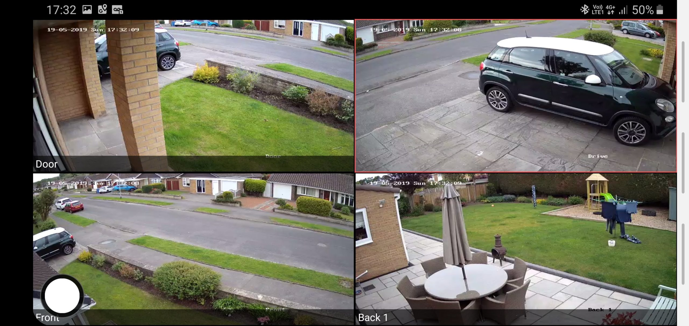

Peace of Mind for Homeowners: How CCTV Can Deter Crime
Crime rates have unfortunately been on the rise in recent times. This can be a cause for concern for homeowners who want to feel safe and secure in their own properties. While there are several security measures you can take, installing a CCTV (Closed-Circuit Television) system can be a highly effective deterrent against crime and anti-social behavior.
Here's how CCTV benefits homeowners:
- Deters Crime:** The visible presence of CCTV cameras can discourage potential intruders from targeting your home. Knowing they're being recorded can make them think twice.
- Provides Evidence:** In the unfortunate event of a break-in, CCTV footage can provide valuable evidence to law enforcement. This can help identify the culprits and increase the chances of recovering stolen property.
- Monitors Activity:** Keep an eye on your property remotely using a smartphone app. This allows you to check in on your home when you're away, providing peace of mind.
- Deters Anti-Social Behavior:** CCTV can help deter vandalism and other disruptive activities around your home. This can create a safer and more secure environment for you and your family.
At 333 Security Systems, we offer a wide range of CCTV solutions tailored to meet the specific needs of homeowners. Our experienced technicians can advise you on the best camera placement and system features to ensure optimal security for your property.
Contact us today for a consultation and learn how CCTV can bring peace of mind to your home.
Email home@333security.co.uk | Phone 07447 688333